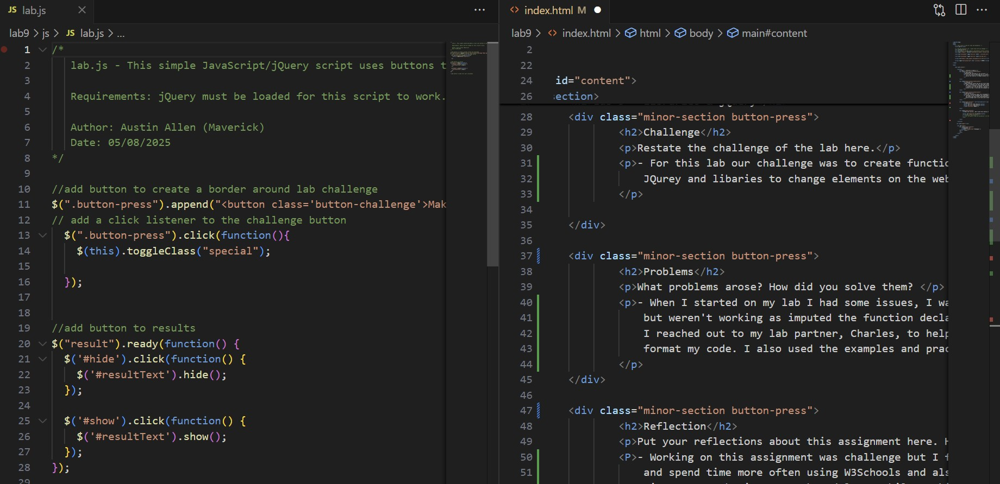

- For this lab our challenge was to create functions that create buttons on our webpage using
JQurey and libaries to change elements on the webpage.
Problems
What problems arose? How did you solve them?
- When I started on my lab I had some issues, I was able to create the interactive buttons
but weren't working as imputed the function declarions incorrectly or didn't write the code correctly.
I reached out to my lab partner, Charles, to help and he was able to explain my declartions and how to properly
format my code. I also used the examples and practiced some of the demos show at W3Schools.
Reflection
Put your reflections about this assignment here. How did it go? What kind of energy did you put into the assignment?
- Working on this assignment was challenge but I feel like that I learned alot but also encouraged me to try
and spend time more often using W3Schools and also the Xtask assignments as well. I also made sure to start early to
give me enough time to work and learn while working on the lab.
Results

Whatever you do...don't push, Da Button, or you'll become invisible